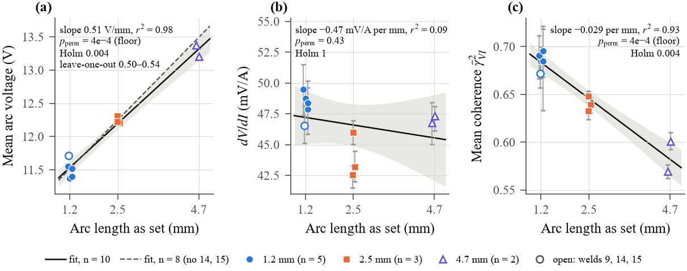
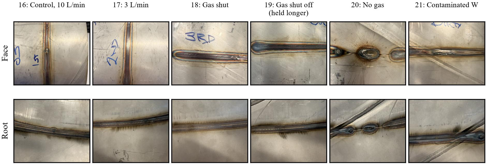

ProblemWiFi stalled about once a minute
Bursts of around 2,000 resent packets arrived like clockwork. FixTraced to WiFi power saving on the Raspberry Pi's hotspot radio. Power saving is now off at both ends.
A clip-on monitor that records a welding arc's voltage and current 333,333 times a second and streams them over WiFi to a Raspberry Pi, without any change to the welder. We built it, checked it on the bench, and used it beside a TIG welder to see what the arc's electrical signals can and cannot tell you.
Each clip shows the camera next to the electrical data recorded during the same weld. Pick an electrode condition. The traces show the last second of arc voltage and current (filtered to 3 kHz for display; the raw data is 100× finer in time).
120 A TIG welds recorded 11 September 2026, torch on a fixture, one run per electrode condition. Camera 15 fps; electrical data 333,333 samples/s per channel. The video is recorded alongside the data, but its timing against the data was never measured.
Replay any weld yourself → All nine 11 September recordings with their video. Zoom from the whole weld down to individual samples 3 µs apart, and watch the voltage–current loop draw itself.Many weld faults, like porosity, a contaminated tungsten or a worn electrode, can't be seen from the outside. They are usually found only when a part is cut open, X-rayed or fails. Meanwhile most workshop welders are legacy machines with no data output at all.
The arc's voltage and current change as the arc, electrode and weld pool interact. Commercial weld monitors usually sample around 10,000 times a second or less, or only work with their maker's power sources. We wanted a low-cost retrofit that records both signals far faster, and to find out what that faster record adds.

Voltage is taken across the welder terminals through a resistor divider. The divider and a reed relay sit in a small housing at the welder end, designed by Sujan Galpottage, so only the reduced signal travels along a shielded cable to the board. Current is measured with a clamp-on Hall-effect sensor (±300 A), which never touches the welding circuit. Each channel has a 6th-order anti-alias filter before a 12-bit ADC.
Both ADCs start each conversion on the same clock edge, driven by the ESP32-S3's I2S peripheral and read by DMA, so samples are 3 µs apart with no CPU in the timing path (the clock measured 13.6 ppm fast).
Samples go out in small UDP packets. The ESP keeps the last ~3 seconds in a resend buffer, and the Raspberry Pi watches sequence numbers and re-requests anything that goes missing. This repaired ordinary WiFi losses, but sequence numbers cannot see a stream that simply stops (see Challenges).
Arc starts can put large voltage spikes on the weld leads. A TVS diode and clamp diodes limit them, and the weld side is galvanically isolated from the electronics by design (parts rated about 3 kV for 60 s; the isolation was not tested). A surge comparator sets a latch that the ESP32 reads, and its firmware then opens the reed relay to disconnect the voltage input. On the schematic the trip needs at least about 300 V; the threshold was never measured, and in use the trip fired at every arc start for a reason we have not found.


The Raspberry Pi serves a live web dashboard (waveforms, spectra, link health) and records each weld, with video from a USB endoscope camera saved alongside. The live current reading was never calibrated on the Pi, so every current on this page was worked out afterwards from the raw data. Full circuit: schematic (PDF, 4 sheets, revised 20 Oct 2026); the divider housing and shielded cables are not drawn on it.
Before any welding we tested the system against a signal generator (23 July and 4 August 2026). Tap any plot to open it full size.


| Measurement | Result |
|---|---|
| Voltage bandwidth (−3 dB) | ≈37 kHz (fitted) vs 35.2 kHz designed |
| Voltage scale | Within 0.53 % of the generator (itself ±1 %) |
| Step rise time | 10.6 µs measured vs 10.7 µs modelled |
| Sample clock | +13.6 ppm, 0.69° peak-to-peak phase residual |
| Effective resolution | 8–9 bits on large signals (includes generator noise) |
| Current channel | Electronics tracked the voltage channel within 0.5 dB to 90 kHz; the Hall sensor itself (25 kHz on its datasheet) was never swept. Its zero sat 174 mV off, removed in software |
| Data integrity | 37 TIG recordings, loss counters all zero, yet two (13 October welds 13 and 14) lost data at the arc strike |
All TIG welding was done with one Miller Dynasty 400 welder in the university's Technical Services workshop.

Only the complete loss of gas and the contaminated tungsten clearly changed the arc. Weld 20, struck with no gas at all, ran at 15.3 V with very noisy voltage, against about 11.5 V for good welds, and its bead is a short oxidised spot. Reduced flow (weld 17) and the gas shut off at the bottle (weld 18, and weld 19 held without gas for longer) kept a normal voltage; gas left in the line may have kept them shielded. Their slightly lower dV/dI is only a lead, as they were single welds made one after another. The contaminated tungsten (weld 21) stood out in every voltage feature, but it was one weld, made last, with an unexplained 3.6 A drop in current.



Everything we found showed in the arc voltage: the arc-length effect and the two clearly abnormal welds. A voltage-led monitor, with reference levels taken from good welds on the same machine and day, would have caught the same things. These are results from one welder, one operator and mostly one weld per condition, so they hold for this setup, not in general.
Bursts of around 2,000 resent packets arrived like clockwork. FixTraced to WiFi power saving on the Raspberry Pi's hotspot radio. Power saving is now off at both ends.
During resend storms, late duplicate packets looked like the ESP32 had rebooted, so the receiver re-synced and recorded old data twice, and no loss counter noticed. FixA window check that ignores late duplicates near the current position.
On 13 October two welds lost data at the arc strike (one stopped 7 ms after it, the other lost its first 6.4 s), yet every loss counter read zero. We only found it by comparing the data and video lengths. FixA wall-clock check on each recording and an automatic ESP32 restart that reports why it reset. These have only been tested off the welder.
Our first frequency sweep rolled off at 4.3 kHz, far below the design, and we first blamed the signal generator. FixThe real cause was the voltage cable's shield, which was tied to ground. Driving the shield from the buffer amplifier instead removed the roll-off, and the channel then matched its design (−3 dB ≈37 kHz, fitted).
The shipped scaling assumed the Hall sensor's zero sat mid-range; on the bench it sat 174 mV high. FixCurrents were recalculated afterwards against the welder's own setpoints, fitting to within about 0.2 A. With no reference meter this shows consistency with the welder, not accuracy.
Occasional samples were read one bit early, doubling their value. In four welds they raised the current spectrum by up to about 15 dB, which had been read as sensor pick-up. FixA detector scanned all 37 recordings and each glitch was repaired from its neighbours before analysis.
Our two independent analysis pipelines gave very different September dV/dI results. FixRe-running both side by side on the raw data showed each had a filter edge effect at the segment boundaries. Filtering the whole recording before cutting it into segments fixed both, and the corrected values are the ones shown here.